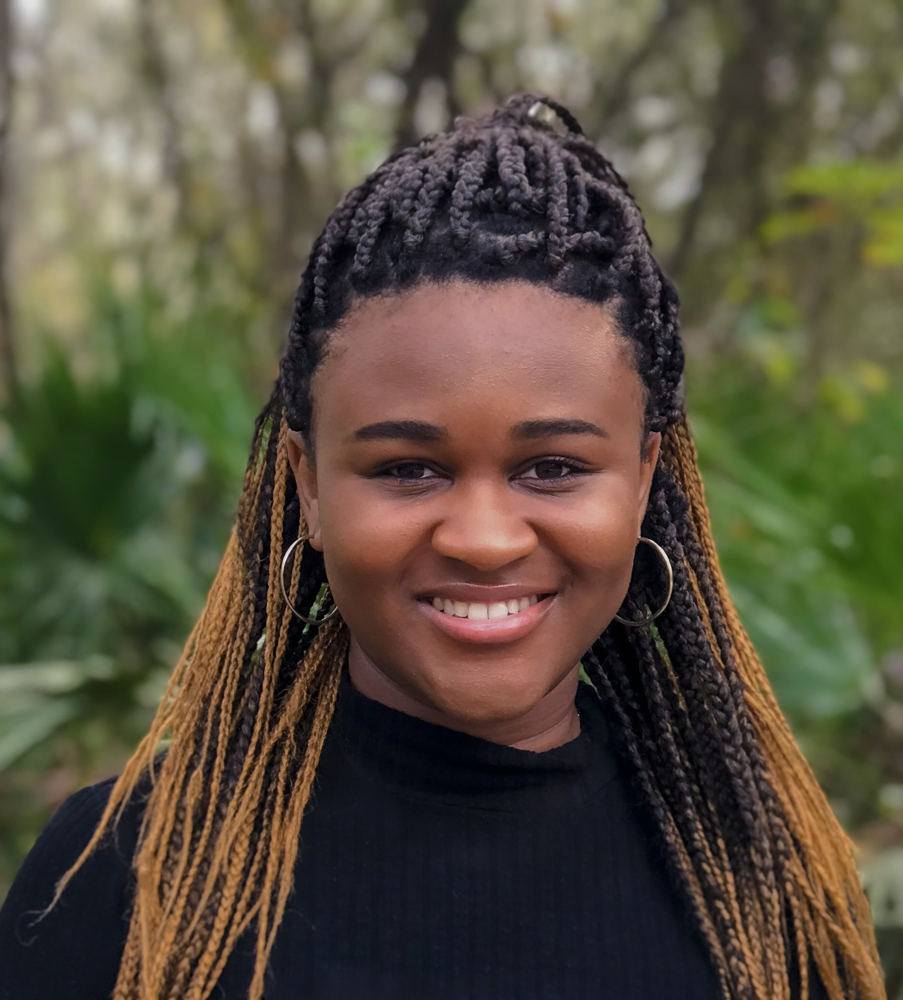

Michou Ducilon

Web Developer and Graphic Designer
About Me
I am a self taught web developer. I am also a graphic designer and web editor and have worked with several companies creating social media content and helping clients with their advertising materials.
Education
- Master of Arts, Digital Journalism and Design - University of South Florida (2022-2023)
- Bachelor of Science, Integrated PR & Advertising - University of South Florida (2019-2021)
Experience
- Account Coordinator - Affinitiv Advertising
Oct 2022 - Present
- Worked with traffic manager for all production jobs.
- Obtained media estimates based on the advertising budget.
- Interacted with clients, multiple departments, and team members.
- Executed the monthly planning creative at the direction of the Senior Account Executive.
- Creative Project Coordinator - Zimmerman Advertising
Mar 2022 - Aug 2022
- Monitored incoming work as it arrived at the creative PM department.
- Maintained Workfront protocol for project processing.
- Facilitated and oversaw projecys within the respective departments.
- Communicated with all departments regarding job status/job content/ over campaign objectives.
- Social Media Coordinator - The CLEO Institute
Apr 2021 - Feb 2022
- Directed all social media channels (Facebook, Linkedin, Twitter, Instagram, & TikTok).
- Executed creative and original social media campaigns and content.
- Tracked performance using analytic tools and developed monthly reports.
- Achieved a 93.5% increase within a quarter, reaching 242k users on Facebook.
Skills
- Microsoft 360
- Adobe Creative Cloud
- Adobe Workfront
- ProofHQ
- Social Media Execution
Other

Contact Me
My Portfolio